Who is the father of Joseph?
(a) Jacob
"And Jacob begot Joseph the husband of Mary, of whom was born Jesus who is called Christ."
(Matthew 1:16)
(b) Heli
"Now Jesus Himself began his ministry at about thirty years of age, being, as was supposed, the son of Joseph, the son of Heli"
(Luke 3:23)
Some Christians may respond by saying that Luke is referring to Mary’s genealogy, however even if that were the case it would still be problematic. To present as to why this is the case, look at this image down below
👇
In Matthew, there are 26 generations from King David all the way to Jesus, but if you look at Luke’s gospel there are an extra 15 generations. If Luke is referring to Mary’s genealogy then one has to wonder what the age difference between Joseph and Mary.
Even if a generation was 10 years for example, 15 x 10 equals 150 years. That would mean that Joseph was 150 years older than Mary which is just completely absurd.
The image above also debunks the apologetic of Jacob and Heli being brothers/adopted brothers because there would still be 15 extra generations between Jacob and Heli. Can you imagine someone who has a brother who is 150 years older than him?
———-
Contradiction of the Bleeding Woman
When the woman who had been bleeding for 12 years touched Jesus’s clothes, how did Jesus react?
(a) Jesus was confused, asked who touched him, and was trying to find who touched him
👇
“And a woman was there who had been subject to bleeding for twelve years. She had suffered a great deal under the care of many doctors and had spent all she had, yet instead of getting better she grew worse. When she heard about Jesus, she came up behind him in the crowd and touched his cloak, because she thought, “If I just touch his clothes, I will be healed.” Immediately her bleeding stopped and she felt in her body that she was freed from her suffering. At once Jesus realized that power had gone out from him. He turned around in the crowd and asked, “Who touched my clothes?” “You see the people crowding against you,” his disciples answered, “and yet you can ask, ‘Who touched me?’ ”But Jesus kept looking around to see who had done it. Then the woman, knowing what had happened to her, came and fell at his feet and, trembling with fear, told him the whole truth. He said to her, “Daughter, your faith has healed you. Go in peace and be freed from your suffering.”
(Mark 5:25-34)
(b) Jesus immediately turned around and saw the woman who touched him. He was not confused, and was not wondering who touched him but rather recognized the one who touched him immediately
👇
“Just then a woman who had been subject to bleeding for twelve years came up behind him and touched the edge of his cloak. She said to herself, “If I only touch his cloak, I will be healed.” Jesus turned and saw her. “Take heart, daughter,” he said, “your faith has healed you.” And the woman was healed at that moment.”
(Matthew 9:20-22)
Also notice how in Mark, the woman was healed before Jesus noticed her, while in Matthew the woman was healed after Jesus noticed her.
————-
What time was Jesus crucified?
(a) 9:00 AM
“It was nine in the morning when they crucified him.”
(Mark 15:25)
(b) 12:00 PM
“It was the day of Preparation of the Passover; it was about noon. ‘Here is your king,’ Pilate said to the Jews. But they shouted, ‘Take him away! Take him away! Crucify him!’ ‘Shall I crucify your king?’ Pilate asked. ‘We have no king but Caesar,’ the chief priests answered. Finally Pilate handed him over to them to be crucified. So the soldiers took charge of Jesus. Carrying his own cross, he went out to the place of the Skull (which in Aramaic is called Golgotha). There they crucified him, and with him two others—one on each side and Jesus in the middle.”
(John 19:14-18)
Some Christians might argue John uses a different calendar but there's no evidence backing it up as pointed out by Theissen and Merz.
👇
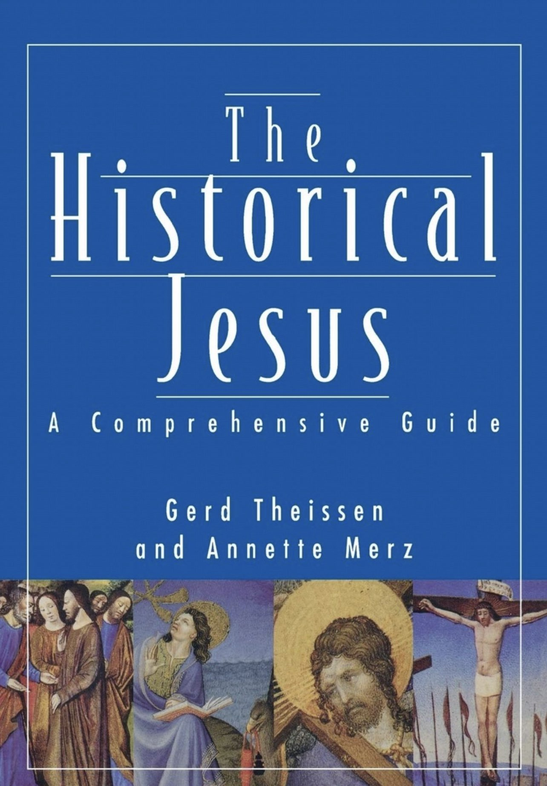
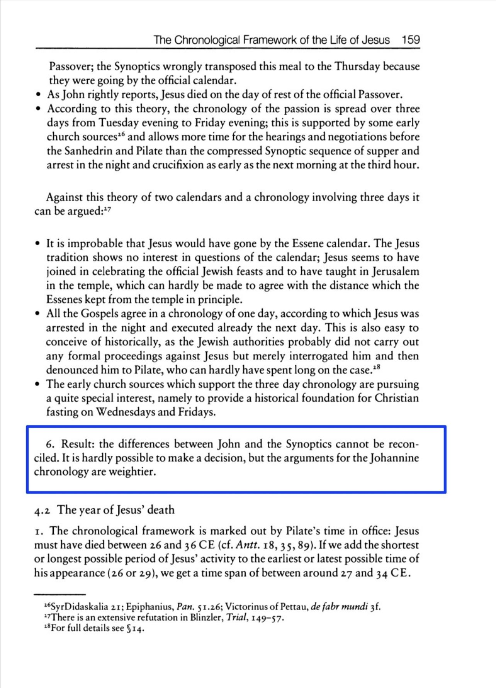
————
Double Contradiction: The Vineyard Contradiction and the Contradiction in Jesus’s death
Was Jesus killed inside a vineyard or outside a vineyard?
According to Mark, Jesus was killed inside a vineyard
👇
“So they took him and killed him, and threw him out of the vineyard.”
(Mark 12:8)
According to Matthew and Luke, Jesus was killed outside a vineyard 👇
“So they took him and threw him out of the vineyard and killed him.”
(Matthew 21:39)
“So they threw him out of the vineyard and killed him.”
(Luke 20:15)
The vineyard represents Jerusalem which means that Mark is saying that Jesus was killed inside Jerusalem while Matthew and Luke say he was killed outside Jerusalem.
Here is what the New American Bible commentary says on this matter 👇
“Luke has altered his Marcan source and reports that the murder of the son takes place outside the vineyard to reflect the tradition of Jesus’s death outside the walls of the city of Jerusalem.”
(New American Bible Commentary on Luke 20:15, see footnote A)
Here is what the New Jerome Biblical Commentary on page 665 says on this matter
👇
“Matthew inverts the order of events to fit the view that Jesus died outside the city”
Now this not the only contradiction here. In the Gospel of Luke, Jesus claims that it was impossible for him to die outside Jerusalem
👇
“In any case, I must press on today and tomorrow and the next day—for surely no prophet can die outside Jerusalem!”
(Luke 13:33)
So not only does the parable in Luke 20:15 contradict the same parable in Mark 12:8 about the location of Jesus’s death, Luke 20:15 also contradicts Luke 13:33 about whether or not it’s possible for Jesus to die outside Jerusalem.
Addressing apologetic response
Christian apologists will try to argue back that in Luke 13:33, it’s not referring to the city but to its religious authorities. They cite Luke 13:34 as evidence 👇
“Jerusalem, Jerusalem, you who kill the prophets and stone those sent to you, how often I have longed to gather your children together, as a hen gathers her chicks under her wings, and you were not willing.”
(Luke 13:34)
Christian apologists argue that a city does not kill people, rather the people within the city kill people, so what Jesus meant to say was that he cannot die outside the religious authorities of Jerusalem.
In response this explanation does nothing to solve the contradiction at hand. The fact is that Mark, Matthew, and Luke are quoting the same parable of Jesus. So regardless of how one defines the word “Jerusalem” Mark still says that Jesus will die inside Jerusalem, while Matthew and Luke say that he will die outside.
————
Is No One Really Sinless, and Can Someone Follow the Law Perfectly?
According to Paul and the Christians: Nobody is sinless, all human beings are sinners. There is no righteous good person. No one can follow the law of Moses properly, and perfectly
👇
“As it is written:
‘There is no one righteous, not even one;’”
(Romans 3:10)
But according to Luke, Zachariah and Elizabeth were both righteous and sinless
👇
“In the time of Herod king of Judea there was a priest named Zechariah, who belonged to the priestly division of Abijah; his wife Elizabeth was also a descendant of Aaron. Both of them were righteous in the sight of God, observing all the Lord’s commands and decrees blamelessly.”
(Luke 1:5-6)
Even Paul himself claims he can follow the law properly 👇
“though I myself have reasons for such confidence.If someone else thinks they have reasons to put confidence in the flesh, I have more: circumcised on the eighth day, of the people of Israel, of the tribe of Benjamin, a Hebrew of Hebrews; in regard to the law, a Pharisee; as for zeal, persecuting the church; as for righteousness based on the law, faultless.”
(Philippians 3:4-6)
When did Satan enter Judas
(a) During supper
“As soon as Judas took the bread, Satan entered into him.”
(John 13:27)
(b) Before the supper
“Now the Festival of Unleavened Bread, called the Passover, was approaching, and the chief priests and the teachers of the law were looking for some way to get rid of Jesus, for they were afraid of the people. Then Satan entered Judas, called Iscariot, one of the Twelve. And Judas went to the chief priests and the officers of the temple guard and discussed with them how he might betray Jesus. They were delighted and agreed to give him money. He consented, and watched for an opportunity to hand Jesus over to them when no crowd was present. Then came the day of Unleavened Bread on which the Passover lamb had to be sacrificed.”
(Luke 22:1-7)
Did Jesus Perform Any Signs? If He Did Then How Many?
Credit to Bassam Zawadi
There is a contradiction in the Bible. In one verse we read that Jesus said that no sign will be given to his generation:
“The Pharisees came and began to question Jesus. To test him, they asked him for a sign (semeion) from heaven. He sighed deeply and said, "Why does this generation ask for a miraculous sign (semeion)? I tell you the truth, no sign (semeion) will be given to it." Then he left them, got back into the boat and crossed to the other side.”
(Mark 8:11-13)
However, in another place it says that his generation would be given the sign of Jonah:
“Then some of the Pharisees and teachers of the law said to him, "Teacher, we want to see a miraculous sign (semeion) from you." 39He answered, "A wicked and adulterous generation asks for a miraculous sign (semeion)! But none will be given it except the sign (semeion) of the prophet Jonah.”
(Matthew 12:38-39)
Some Christians might try to say that Jesus meant that they would not receive a sign from heaven in Mark 8; however Jesus made it clear that they would not receive any semeion and did not specify which kind. Jesus said no semeion would be given to his generation. However, we don't see this in Matthew.
Now obviously when Jesus was talking about giving the people the 'Sign of Jonah', he was referring to his alleged resurrection. (What would be miraculous about him dying and being buried?)
Another question that arises is the issue regarding all of Jesus' other miracles such as healing the blind, the leper, resurrecting the dead and feeding thousands with a little amount of food. Aren't all of these miracles considered signs?
Either there is a discrepancy between Jesus saying that he will give NO SIGN to the Jews except the sign of Jonah and him doing other miracles such as healing the blind and raising the dead.
Or the other option is Christians stating that Jesus' healing of the blind and his raising of the dead were not miracles or signs of his Prophethood. But that makes no sense. If they were not signs, then why would Jesus perform these miracles?
Someone might argue that Jesus meant to say that he would give no sign afterwards from that particular point in time. However, this could easily be refuted by simply reading on after that passage and seeing passages such as Mark 8:22-26, which show that Jesus healed a blind man or Mark 9:14-onwards, which show Jesus performing exorcism on a boy.
Questions That Christians Need to Answer
1. Why did Jesus say that no sign will be given to his generation in Mark 8:11-13, but said that one sign would be given in Matthew 12:38-39? Weren't Mark's audience misled by Mark's Gospel and understood that Jesus told the Jews that he will give them no sign?
2. If you were successful at harmonizing the difficulty above, then how do you explain the fact that Jesus told the Jews that he would only give them ONE SIGN and that is the sign of Jonah, while he did perform other signs such as healing the blind and feeding thousands with a little amount of food?
How many blind men were healed on the road?
(a) One
Then they came to Jericho. As Jesus and his disciples, together with a large crowd, were leaving the city, a blind man, Bartimaeus (which means “son of Timaeus”), was sitting by the roadside begging. When he heard that it was Jesus of Nazareth, he began to shout, “Jesus, Son of David, have mercy on me!”Many rebuked him and told him to be quiet, but he shouted all the more, “Son of David, have mercy on me!”
Jesus stopped and said, “Call him.” So they called to the blind man, “Cheer up! On your feet! He’s calling you.” Throwing his cloak aside, he jumped to his feet and came to Jesus. “What do you want me to do for you?” Jesus asked him.
The blind man said, “Rabbi, I want to see.”
“Go,” said Jesus, “your faith has healed you.” Immediately he received his sight and followed Jesus along the road.”
(Mark 10:46-52)
(b) Two
“As Jesus and his disciples were leaving Jericho, a large crowd followed him. Two blind men were sitting by the roadside, and when they heard that Jesus was going by, they shouted, “Lord, Son of David, have mercy on us!” The crowd rebuked them and told them to be quiet, but they shouted all the louder, “Lord, Son of David, have mercy on us!”Jesus stopped and called them. “What do you want me to do for you?” he asked. “Lord,” they answered, “we want our sight.” Jesus had compassion on them and touched their eyes. Immediately they received their sight and followed him.”
(Matthew 20:29-34)
——
Jesus’s False Promise on the Cross
Credit to Quran and Bible Blog
According to the Gospel of Luke, the Biblical Jesus made a promise to the robber who was crucified with him:
👇
“Jesus answered him, ‘Truly I tell you, today you will be with me in paradise.’”
(Luke 23:43)
However if we go to the Gospel of John, the Biblical Jesus says to the disciples after the resurrection that he has not yet ascended to his father yet which means he didn’t go to paradise yet.
👇
“Jesus said, “Do not hold on to me, for I have not yet ascended to the Father. Go instead to my brothers and tell them, ‘I am ascending to my Father and your Father, to my God and your God.’”
(John 20:17)
Where is the Father? He is in heaven according to Matthew.
👇
“And do not call anyone on earth ‘father,’ for you have one Father, and he is in heaven.”
(Matthew 23:9)
But the Biblical Jesus’s promise to the robber was that he would see Jesus in Heaven on the same day (i.e. on that Friday, the day of the crucifixion). Yet John says that he did not yet ascend to the Father who is in Heaven on Sunday.
To make matters even more odd, when coupled with the “Creed of the Apostles” which may be based on 1 Peter 3:18-20, the Biblical Jesus is supposed to have gone to hell after the crucifixion:
👇
“For Christ also suffered once for sins, the righteous for the unrighteous, to bring you to God. He was put to death in the body but made alive in the Spirit. After being made alive, he went and made proclamation to the imprisoned spirits to those who were disobedient long ago when God waited patiently in the days of Noah while the ark was being built. In it only a few people, eight in all, were saved through water,”
(1 Peter 3:18-20)
———
The Passover Meal Contradiction
Credit to Many Prophets One Message
According to the Synoptic Gospels, the disciples prepared the Passover feast, and ate it with the Biblical Jesus. This is the famous last supper.
👇
“The disciples left, went into the city and found things just as Jesus had told them. So they prepared the Passover. When evening came, Jesus arrived with the Twelve. While they were reclining at the table eating, he said, “Truly I tell you, one of you will betray me—one who is eating with me.”
(Mark 14:16-18)
“So the disciples did as Jesus had directed them and prepared the Passover. When evening came, Jesus was reclining at the table with the Twelve. And while they were eating, he said, ‘Truly I tell you, one of you will betray me.’”
(Matthew 26:19-21)
“They left and found things just as Jesus had told them. So they prepared the Passover. When the hour came, Jesus and his apostles reclined at the table. And he said to them, “I have eagerly desired to eat this Passover with you before I suffer. For I tell you, I will not eat it again until it finds fulfillment in the kingdom of God.”
(Luke 22:13-16)
Now the Gospel of John also indicates that the Biblical Jesus had a last meal with the disciples.
However unlike the Synoptic Gospels, we are told that his final meal took place before the Passover.
👇
“It was just before the Passover Festival. Jesus knew that the hour had come for him to leave this world and go to the Father. Having loved his own who were in the world, he loved them to the end. The evening meal was in progress, and the devil had already prompted Judas, the son of Simon Iscariot, to betray Jesus.”
(John 13:1-2)
John goes on to state that the Biblical Jesus was put on trial on the day of the Preparation for the Passover.
👇
”It was the day of Preparation of the Passover; it was about noon. ‘Here is your king,’ Pilate said to the Jews. But they shouted, ‘Take him away! Take him away! Crucify him!’ ‘Shall I crucify your king?’ Pilate asked. ‘We have no king but Caesar,’ the chief priests answered.”
(John 19:14-15)
Remember that according to the Synoptic Gospels, the Biblical Jesus ate the Passover meal before his arrest. However John’s timing of the story is different. He claims that the Biblical Jesus was put on trial before the Passover meal was eaten.
Refuting Christians Response
Christian apologists try to argue that even though the Passover meal was consumed on a specific day, the actual Passover festival was treated as a 7 day event. That’s the because the Feast of Unleavened Bread, a 7 day event overlapped with the Passover. So technically while the Passover, and the Feast of Unleavened Bread were two separate festivals, they were spoken of as if they were one entity.
—-
We see this demonstrated in the Gospel of Luke for example:
👇
“Now the Festival of Unleavened Bread, called the Passover, was approaching,”
(Luke 22:1)
On this basis, Christian apologists argue that John is not in contradiction with the synoptic gospels because of the 7 days of the Feast of Unleavened Bread could have been referred to as Passover.
In response to this apologetic defense, it is true that people may have stretched the Passover celebration across the 7 days of the Feast of Unleavened Bread, the Passover lamb still had to be slaughtered and prepared on a specific day. The first of the 7 days. Scripture informs us:
“On the first day of the Festival of Unleavened Bread, when it was customary to sacrifice the Passover lamb, Jesus’ disciples asked him, “Where do you want us to go and make preparations for you to eat the Passover?”
(Mark 14:12)
A good way to illustrate this is with Christmas. The celebration of Christmas commonly known as the Festive Season goes beyond just December 25th. It can refer up to the time leading up to December 25th when people are busy buying presents for their loved ones, and it can even include the aftermath of December 25th such as New Years Eve. All of these days fall under the umbrella of the Festive Season, even though technically speaking Christmas is a single day event.
Now with regards to the Christmas meal, when people speak of preparing the turkey, it can only refer to a specific day which is December 25th, and not the days and weeks that proceed or follow on from then. Even though one can eat turkey any day of the year, everyone understands that the Christmas turkey has a specific meaning.
Applying this concept to the Passover meal, while indeed the celebration of Passover as a festival can indeed expand 7 days, the preparation of the lamb can only refer to a specific day which is the first of the 7 days.
Hence when John claimed that the Biblical Jesus was arrested before the day of preparation of the Passover lamb, this contradicts the Synoptic Gospels which claim that the Biblical Jesus ate the Passover lamb.
———
Why does John contradict the Synoptics?
Now, you may be wondering, why the did the author of the Gospel of John change the narrative. We are given a clue in the first chapter of John:
👇
“The next day John saw Jesus coming toward him and said, “Look, the Lamb of God, who takes away the sin of the world!”
(John 1:29)
It’s crucial to note that the Gospel of John is the only one that identifies the Biblical Jesus as the lamb of God. Thus the Biblical Jesus is portrayed as the Passover lamb slaughtered on the day of Preparation of Passover.
We can see that the author was willing to alter the story in order to make Jesus conform to their theological beliefs. This is one of the reasons why New Testament scholars conclude that the Gospel of John is not historically accurate.
—-
Biblical scholar and Anglican priest Christopher Tuckett, in his book “Christology and the New Testament”, has this to say:
👇
“In terms simply of historical reliability or ‘authenticity’, it seems impossible to maintain that both John and the synoptics [Mark, Matthew and Luke] can be presenting us with equally ‘authentic’ accounts of Jesus‘ own life. By ‘authentic’ accounts I mean here historically accurate representations of what Jesus himself actually said and did. The theological ‘authenticity’ of John’s account is quite another matter. The differences between the two are too deep seated and wide ranging for such a position to be sustainable. If there is a choice, it is almost certainly to be made in favour of the synoptic picture, at least in broadly general terms. The picture John then presents us with is a view of the Jesus tradition which has been heavily coloured and influenced by John and his own situation.”
– Christopher Tuckett, Christology and the New Testament, chapter 9: ‘The Gospel of John’, pp.151-152.
Evangelical scholar Professor Richard Bauckham in his recent book “Jesus and the Eyewitnesses: The Gospels as Eyewitness Testimony” argues that the fourth Gospel stems from an eyewitness to the ministry of Jesus, namely, the disciple John. At the same time, however, Bauckham also acknowledges the differences between the fourth gospel and the Synoptics and argues that John is a more reflective and a highly interpreted account of the life and ministry of Jesus. He concludes:
“All scholars, whatever their views of the redactional work of the Synoptic Evangelists and of the historical reliability of the Gospel of John, agree that the latter presents a much more thoroughly and extensively interpreted version of the story of Jesus.”
– Richard Bauckham, Jesus and the Eyewitnesses: The Gospels as Eyewitness Testimony, p. 410.
Here in a debate the evangelical apologist and New Testament scholar Mike Licona concedes that John is not a historical account of Jesus:
https://www.youtube.com/watch?feature=youtu.be&a=&v=e8itdKWa3Ko
Scholars and Commentators who have said this is a contradiction
C.K. Barrett, the president of the Society for New Testament Studies (1973) and one of the greatest NT commentators of all time from the UK stated:
👇
“According to John the crucifixion happened on Nisan 14, the day before the Passover, the last supper must have been eaten the preceding evening. Thus the events are set a day earlier than in Mark, and the last supper is no longer the paschal meal; Jesus died at the same time when the Passover sacrifices were being killed in the Temple. Here again is a real contradiction; it seems impossible to reconcile the dates.”
—C.K. Barrett, The Gospel According to St. John: An introduction with Commentary, 2nd edition (Philadelphia: The Westminster Press, 1978), p. 48.
Christian apologist Mike Licona conceded this as a contradiction during his debate with Professor Bart Ehrman.
👇
https://www.youtube.com/watch?v=ZFAoWE11JRg
(8:00 mark)
Because John’s timeline corresponds intimately with his Crucifixion theology, some scholars have been led to dismiss this tale as a fabrication.
👇
E.P. Sanders, The Historical Figure of Jesus (England: Penguin Books, 1995) p. 72.
——
Contradiction on What Happened after the Crucifixion
According to Matthew 28:10, 16-20 after the crucifixion, the disciples were told to go to Galilee (far to the north of Jerusalem), where they first met the risen Jesus and he gave them the Great Commission and told them to leave him and preach to all nations
👇
“Then Jesus said to them, ‘Do not be afraid. Go and tell my brothers to go to Galilee; there they will see me.’”
(Matthew 28:10)
“Then the eleven disciples went to Galilee, to the mountain where Jesus had told them to go. When they saw him, they worshiped him; but some doubted. Then Jesus came to them and said, “All authority in heaven and on earth has been given to me. Therefore go and make disciples of all nations, baptizing them in the name of the Father and of the Son and of the Holy Spirit, and teaching them to obey everything I have commanded you. And surely I am with you always, to the very end of the age.”
(Matthew 28:16-20)
—-
However if we go to Luke 24:36-51, Jesus meets the disciples at a meal, and then leads them out on the road to Bethany, where he bid them farewell and was taken up into heaven
👇
“While they were still talking about this, Jesus himself stood among them and said to them, “Peace be with you.” They were startled and frightened, thinking they saw a ghost. He said to them, “Why are you troubled, and why do doubts rise in your minds? Look at my hands and my feet. It is I myself! Touch me and see; a ghost does not have flesh and bones, as you see I have.” When he had said this, he showed them his hands and feet. And while they still did not believe it because of joy and amazement, he asked them, “Do you have anything here to eat?” They gave him a piece of broiled fish,and he took it and ate it in their presence. He said to them, “This is what I told you while I was still with you: Everything must be fulfilled that is written about me in the Law of Moses, the Prophets and the Psalms.” Then he opened their minds so they could understand the Scriptures. He told them, “This is what is written: The Messiah will suffer and rise from the dead on the third day, and repentance for the forgiveness of sins will be preached in his name to all nations, beginning at Jerusalem. You are witnesses of these things. I am going to send you what my Father has promised; but stay in the city until you have been clothed with power from on high.” When he had led them out to the vicinity of Bethany, he lifted up his hands and blessed them. While he was blessing them, he left them and was taken up into heaven.”
(Luke 24:36-51)
——-
Did Jesus allow his disciples to keep a staff on their journey?
(a) Yes (Mark 6:8)
“He commanded them to take nothing for the journey except a staff - no bag, no bread, no copper in their money belts - but to wear sandals, and not to put on two tunics.”
(Mark 6:8-9)
(b) No (Matthew 10:9; Luke 9:3)
“Provide neither gold nor silver nor copper in your money belts, nor bag for your journey, nor two tunics, nor sandals, nor staffs; for a worker is worthy of his food.”
(Matthew 10:9-10)
“And He said to them, “Take nothing for the journey, neither staffs nor bag nor bread nor money; and do not have two tunics apiece.”
(Luke 9:3)
——-
Who bought the field, what happened to the money and how did Judas die?
(a) Threw away the money, hanged himself, priests bought the field (Matthew 27:5)
“Then he threw down the pieces of silver in the temple and departed, and went and hanged himself. But the chief priests took the silver pieces and said, “It is not lawful to put them into the treasury, because they are the price of blood.” And they consulted together and bought with them the potter’s field, to bury strangers in.”
(Matthew 27:5-7)
(b) Kept the money, purchased the field himself and died by falling headlong (Acts 1:18)
“With the payment he received for his wickedness, Judas bought a field; there he fell headlong, his body burst open and all his intestines spilled out.”
(Acts 1:18)
3 questions :
1) Who bought the field? Priests or Judas?
2) Did Judas throw away the money or kept it?
3) Did Judas hang himself or fell headlong?
—-
Refuting apologetic responses
Christian apologists claim that the way Judas died was not contradictory but complimentary, but I will refute this
There are three contradictions with regards to Judas’s fate:
1. Who bought the field? Priests or Judas?
2. Did Judas throw away the money or kept it?
3. Did Judas hang himself or fell headlong?
With regards to point #1 this is what we read
👇
So Judas threw the money into the temple and left. Then he went away and hanged himself. The chief priests picked up the coins and said, “It is against the law to put this into the treasury, since it is blood money.” So they decided to use the money to buy the potter’s fieldas a burial place for foreigners.
(Matthew 27:5-7)
With the payment he received for his wickedness, Judas bought a field;there he fell headlong, his body burst open and all his intestines spilled out.
(Acts 1:18)
I think this is self explanatory. One passage says the priests bought the field, and the other passage says Judas bought it. They cannot both be correct.
As regards to point #2, If Judas threw away the money then how could he have bought a field? It’s not like he purchased it with other money he has. Acts specifically states, “With the payment be received for his wickedness, Judas bought a field;” This obviously refers to the money he got from betraying Jesus. But according to Matthew he threw it away meaning it’s impossible to have used that money to buy anything.
With point #3, Christian apologists try to defend this discrepancy by saying that Judas was indeed hanged, but after sometime the rope snapped and that’s how he fell headlong and bursted his organs. This is a very strange explanation. If your hanging from a rope, and then fall, you can’t fall headlong, that’s impossible. You would fall feet first. If you fall from a rope, then you would just drop and land on your back or side, you would not fall headfirst.
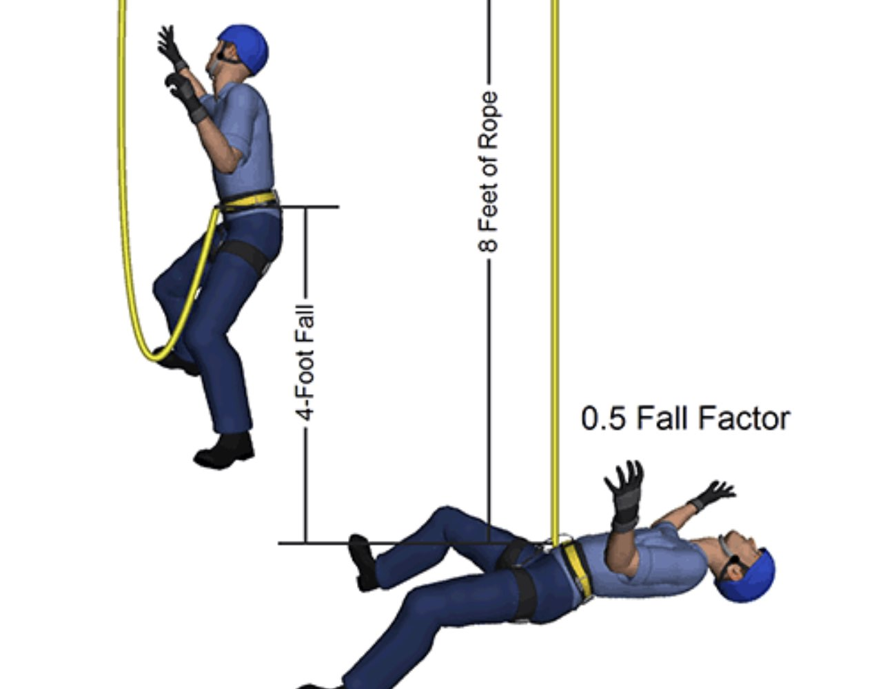
This would be falling from a rope
This would be falling headlong
Contradiction in Abraham’s Age when he left Haran
“After Terah had lived 70 years, he became the father of Abram, Nahor and Haran.”
(Genesis 11:26)
“Terah lived 205 years, and he died in Harran.”
(Genesis 11:32)
“So he left the land of the Chaldeans and settled in Harran. After the death of his father, God sent him to this land where you are now living. He gave him no inheritance here, not even enough ground to set his foot on. But God promised him that he and his descendants after him would possess the land, even though at that time Abraham had no child.”
(Acts 7:4-5)
“So Abram went, as the Lord had told him; and Lot went with him. Abram was seventy-five years old when he set out from Harran.”
(Genesis 12:4)
To recap, Terah was 70 when he fathered Abram (later Abraham), died at 205 meaning Abraham was 205-70= 135 when Terah died. Abraham didn't leave Haran until after his father died at which point he was only 75. This is not a mis-translation. This is a definitive discrepancy of ages. It's not even a rounding. It's a difference of 60 years.
——-
Did people hear the voice of God?
(a) Yes
“And the Father who sent me has himself borne witness about me. His voice you have never heard, his form you have never seen.” (John 5:37)
(b) No
“And a voice from heaven, ‘You are my beloved Son; with you I am well pleased.’” (Mark 1:11)
This becomes worse for the Christians because the church fathers say that the purpose of the voice was so that “ALL “could witness it. The "son" was "manifested both by hearing and by sight" to an "unfaithful people".
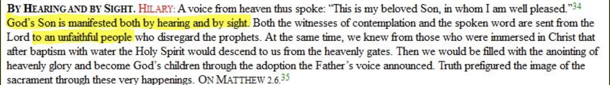
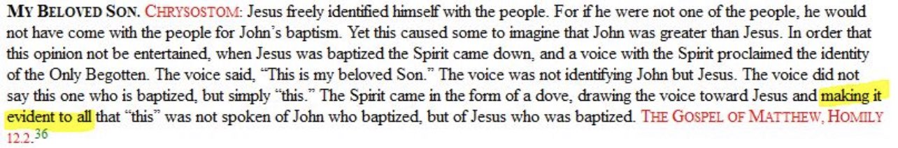
——
What were Jesus’s last words before he died?
According to Mark and Matthew, Jesus’s last words were “My God, my God why have you forsaken me?”
👇
“At noon, darkness came over the whole land until three in the afternoon. And at three in the afternoon Jesus cried out in a loud voice, “Eloi, Eloi, lema sabachthani?” (which means “My God, my God, why have you forsaken me?”).
When some of those standing near heard this, they said, “Listen, he’s calling Elijah.” Someone ran, filled a sponge with wine vinegar, put it on a staff, and offered it to Jesus to drink. “Now leave him alone. Let’s see if Elijah comes to take him down,” he said. With a loud cry, Jesus breathed his last.”
(Mark 15:33-37)
“From noon until three in the afternoon darkness came over all the land. About three in the afternoon Jesus cried out in a loud voice, “Eli, Eli, lema sabachthani?” (which means “My God, my God, why have you forsaken me?”). When some of those standing there heard this, they said, “He’s calling Elijah.” Immediately one of them ran and got a sponge. He filled it with wine vinegar, put it on a staff, and offered it to Jesus to drink. The rest said, “Now leave him alone. Let’s see if Elijah comes to save him.” And when Jesus had cried out again in a loud voice, he gave up his spirit.”
(Matthew 27:45-50)
——
According to Luke, Jesus’s last words were “Father, into your hands I commit my spirit.”
👇
“It was now about noon, and darkness came over the whole land until three in the afternoon, for the sun stopped shining. And the curtain of the temple was torn in two. Jesus called out with a loud voice, “Father, into your hands I commit my spirit.” When he had said this, he breathed his last.”
(Luke 23:44-46)
According to John, Jesus’s last words were “It is finished”
👇
“Later, knowing that everything had now been finished, and so that Scripture would be fulfilled, Jesus said, “I am thirsty.” A jar of wine vinegar was there, so they soaked a sponge in it, put the sponge on a stalk of the hyssop plant, and lifted it to Jesus’ lips. When he had received the drink, Jesus said, “It is finished.” With that, he bowed his head and gave up his spirit.”
(John 19:28-30)
So we have three final last words allegedly spoken by Jesus, but which one is it?
One might respond by saying that Jesus did say “My God, my god why have you forsaken me,” but then afterward said “Father, into your hands I commit my spirit” since in Matthew it says,
“…And when Jesus had cried out again in a loud voice, he gave up his spirit.”
However this response does not work because in both Mark and Matthew, he didn't cry out and say anything, he just cried out (in pain, obviously) and then died. If he cried out a second time to say something again loudly there's no way the other authors wouldn't have heard that.
Even if we grant that Mark, Matthew, and Luke can be harmonized by saying that Jesus said the Pslam 22 quote, then “Father into your hands I commit my spirit” That still leaves the issue in John’s gospel since John says that Jesus’s final words were “It’s finished.” How can that be reconciled in Luke’s recording of his final words?
———
Biblical Jesus confuses the two priests in the Old Testament
The Biblical Jesus retells a story to the Pharisees that is found in the Old Testament. However the Biblical Jesus mistakes who the high priest was during the events of that story.
👇
“He answered, ‘Have you never read what David did when he and his companions were hungry and in need? In the days of Abiathar the high priest, he entered the house of God and ate the consecrated bread, which is lawful only for priests to eat. And he also gave some to his companions.’” (Mark 2:25-26)
If we look back into the Old Testament, at the specific story that the Biblical Jesus was referring to it’s a completely different person all together.
👇
“David went to Nob, to Ahimelek the priest. Ahimelek trembled when he met him, and asked, “Why are you alone? Why is no one with you? David answered Ahimelek the priest, ‘The king sent me on a mission and said to me, ‘No one is to know anything about the mission I am sending you on.’ As for my men, I have told them to meet me at a certain place. Now then, what do you have on hand? Give me five loaves of bread, or whatever you can find But the priest answered David, ‘I don’t have any ordinary bread on hand; however, there is some consecrated bread here—provided the men have kept themselves from women.”
(1 Samuel 21:1-4)
Christians try to get around this by saying that the event happened while Ahimelek was still high priest, but he died shortly afterward. Abiatar his son is his successor. He is the high priest of the reign.
However this apologetic won’t work because
1 Samuel 21 and Mark 2 are specifically talking about the time when David entered the temple to feed his men. Jesus in Mark 2 reminds the Pharisees of this story yet he gets the two priests mixed up.
———
Contradiction on the Tomb Visit and Resurrection
Credit to Many Prophets One Message
The Gospel of Matthew describes Mary Magdalene’s visit to the burial tomb as follows:
👇
“After the Sabbath, at dawn on the first day of the week, Mary Magdalene and the other Mary went to look at the tomb. There was a violent earthquake, for an angel of the Lord came down from heaven and, going to the tomb, rolled back the stone and sat on it. His appearance was like lightning, and his clothes were white as snow. The guards were so afraid of him that they shook and became like dead men. The angel said to the women, “Do not be afraid, for I know that you are looking for Jesus, who was crucified. He is not here; he has risen, just as he said. Come and see the place where he lay. Then go quickly and tell his disciples: ‘He has risen from the dead and is going ahead of you into Galilee. There you will see him.’ Now I have told you.” So the women hurried away from the tomb, afraid yet filled with joy, and ran to tell his disciples. Suddenly Jesus met them. “Greetings,” he said. They came to him, clasped his feet and worshiped him.”
(Matthew 28:1-9)
——
By comparison the Gospel of John describes Mary Magdalene’s visit as follows:
👇
“Early on the first day of the week, while it was still dark, Mary Magdalene went to the tomb and saw that the stone had been removed from the entrance. So she came running to Simon Peter and the other disciple, the one Jesus loved, and said, “They have taken the Lord out of the tomb, and we don’t know where they have put him!”
(John 20:1-2)
We can see that in Matthew’s account, Mary Magdalene is presented as finding the tomb empty, and upon running away she encountered Jesus.
But in John’s account, Mary Magdalene is also presented as finding the tomb empty. However after she fled the tomb, she met with the disciples and told them that she couldn’t find Jesus.
These two accounts of the resurrection are definitely a contradiction. If Mary Magdalene met Jesus at the tomb as Matthew says, then she couldn’t have reported that he was missing as John claims.
Refuting Christian Response
Christian apologists respond by pointing out that John’s gospel goes on to describe a second tomb visit by Mary Magdalene in which she meets Jesus:
👇
“Now Mary stood outside the tomb crying. As she wept, she bent over to look into the tomb and saw two angels in white, seated where Jesus’ body had been, one at the head and the other at the foot. They asked her, “Woman, why are you crying?” “They have taken my Lord away,” she said, “and I don’t know where they have put him.” At this, she turned around and saw Jesus standing there, but she did not realize that it was Jesus. He asked her, “Woman, why are you crying? Who is it you are looking for?” Thinking he was the gardener, she said, “Sir, if you have carried him away, tell me where you have put him, and I will get him.” Jesus said to her, “Mary.” She turned toward him and cried out in Aramaic, “Rabboni!” (which means “Teacher”). Jesus said, “Do not hold on to me, for I have not yet ascended to the Father. Go instead to my brothers and tell them, ‘I am ascending to my Father and your Father, to my God and your God.’”
(John 20:11-17)
——-
Christian apologists argue that armed with this extra information about Mary Magdalene’s second tomb visit, it is possible to harmonize Matthew and John’s accounts using the following sequence of events:
1. Firstly a group of women which includes Mary Magdalene go to the tomb to anoint the dead body of Jesus.
2. Secondly the women find the tomb empty.
3. Thirdly the women split into two groups with Mary Magdalene leaving the other women behind at the tomb. Mary Magdalene then tells the disciples that Jesus is missing.
4. Fourthly the women who remain behind at the tomb encounter Jesus.
5. Fifthly Mary Magdalene returns to the tomb for a second visit. It is during this visit where she meets Jesus.
Now this sequence of events while creative is simply impossible when we analyze both Matthew and John’s accounts in a bit more detail.
—-
Firstly John mentions that the stone was removed during the tomb’s entrance during the first visit, not the second visit. This coincides with Matthew’s account which states the stone was removed when Mary Magdalene first approached the tomb. So Matthew must first be talking about John’s first visit, not the second visit.
Secondly, Matthew introduces the story by mentioning that there were two women: Mary Magdalene and the other Mary. Thereafter Matthew repeatedly uses the term “the women.”
This means that Matthew intended for his readers to understand that Mary Magdalene first met Jesus on her first visit to the tomb which completely refutes the Christian apologist claim that the women split into two groups
👇
“After the Sabbath, at dawn on the first day of the week, Mary Magdalene and the other Mary went to look at the tomb. There was a violent earthquake, for an angel of the Lord came down from heaven and, going to the tomb, rolled back the stone and sat on it. His appearance was like lightning, and his clothes were white as snow. The guards were so afraid of him that they shook and became like dead men. The angel said to the women, “Do not be afraid, for I know that you are looking for Jesus, who was crucified. He is not here; he has risen, just as he said. Come and see the place where he lay. Then go quickly and tell his disciples: ‘He has risen from the dead and is going ahead of you into Galilee. There you will see him.’ Now I have told you.” So the women hurried away from the tomb, afraid yet filled with joy, and ran to tell his disciples. Suddenly Jesus met them. “Greetings,” he said. They came to him, clasped his feet and worshiped him.”
(Matthew 28:1-9)
In conclusion, Matthew’s claim that Mary Magdalene met Jesus on her first visit to the tomb completely contradicts John who claims that she told the disciples that Jesus was missing during her first visit.
Jesus’s Appearance To The 12 or 11 Disciples?
According to Paul, Jesus appeared to the 12 apostles: 👇
“that he was buried, that he was raised on the third day according to the Scriptures, and that he appeared to Cephas, and then to the Twelve. After that, he appeared to more than five hundred of the brothers and sisters at the same time, most of whom are still living, though some have fallen asleep. Then he appeared to James, then to all the apostles, and last of all he appeared to me also, as to one abnormally born.”
(1 Corinthians 15:4-8)
——
In the Gospels, we know that there were not 12 disciples soon after the crucifixion because Judas had died. Some might argue that “the twelve” is merely a “title” and doesn’t actually mean how many disciples there are. This is inconsistent with the fact that the Gospels treat the disciples as 11 when Judas was no longer around. If it had been a special designation for the disciples despite their actual number, the gospel authors would have kept using “the twelve” throughout but didn’t. Luke says that Jesus appeared to “the eleven” and ate honeycomb and broiled fish in their midst in the upper room: 👇
“They got up and returned at once to Jerusalem. There they found the Eleven and those with them, assembled together and saying, “It is true! The Lord has risen and has appeared to Simon.”Then the two told what had happened on the way, and how Jesus was recognized by them when he broke the bread. While they were still talking about this, Jesus himself stood among them and said to them, “Peace be with you.” They were startled and frightened, thinking they saw a ghost. He said to them, “Why are you troubled, and why do doubts rise in your minds? Look at my hands and my feet. It is I myself! Touch me and see; a ghost does not have flesh and bones, as you see I have.” When he had said this, he showed them his hands and feet. And while they still did not believe it because of joy and amazement, he asked them, “Do you have anything here to eat?” They gave him a piece of broiled fish, and he took it and ate it in their presence.”
(Luke 24:33-43)
—-
John complicates the issue when the author says that Thomas was not around when Jesus appeared as related in Luke. This causes two problems:
1. The author makes the mistake of saying “the Twelve”: “Now Thomas (also known as Didymus), one of the Twelve, was not with the disciples when Jesus came.” (See John 20:24)
3. That means that the number of disciples that were present should have been ten at the most and not eleven as Luke claims.
Paul and John both say “twelve”, Luke says “eleven” and John implies “ten”. Which one is true? Scholars like Dr. William Lane Craig have tried to reconcile this conundrum by proposing a sequence of events where Jesus is suggested to have first appeared in Jerusalem then the disciples went back to Galilee and after that they returned to Jerusalem for Pentecost. Is this harmonizing attempt coherent? The late Raymond E. Brown disagreed. Such a sequential harmonizing according to him:
“…does violence to the Gospel evidence.”
— Raymond E. Brown, An Introduction to New Testament Christology (New York: Paulist Press, 1997), p. 168.
——-
When was the Holy Spirt bestowed?
(a) At Pentecost
“But you will receive power when the Holy Spirit comes on you; and you will be my witnesses in Jerusalem, and in all Judea and Samaria, and to the ends of the earth.”
(Acts 1:8)
(b) Before Pentecost
“And with that he breathed on them and said, “Receive the Holy Spirit.”
(John 20:22)
——-
Has anyone but Jesus went up to Heaven
(a) No
“No one has ever gone into heaven except the one who came from heaven—the Son of Man.”
(John 3:13)
(b) Yes
“As they were walking along and talking together, suddenly a chariot of fire and horses of fire appeared and separated the two of them, and Elijah went up to heaven in a whirlwind.”
(2 Kings 2:11)
——-
How Many Sons did Abraham have
(a) One
“By faith Abraham, when God tested him, offered Isaac as a sacrifice. He who had embraced the promises was about to sacrifice his one and only son”
(Hebrews 11:17)
(b) Two
“For it is written, that Abraham had two sons, the one by a bondmaid, the other by a freewoman.”
(Galatians 4:22)
——
Jesus Vs Paul: “I Said Nothing in Secret”
The Biblical Jesus said:
“I have spoken openly to the world,” Jesus replied. “I always taught in synagogues or at the temple, where all the Jews come together. I said nothing in secret.”
(John 18:20)
Yet, if this is true, then Paul, is making a claim against Jesus:
“In the same way, the Lord has commanded that those who preach the gospel should receive their living from the gospel.”
(1 Corinthians 9:14)
—-
Therefore the question arises, if Jesus commanded this and in understanding he said nothing in secret, considering 2 Timothy 3:16’s statement that, “All Scripture is God-breathed”, where exactly did Jesus ever utter such a statement in the New Testament?
The challenge is quite simple:
* Jesus says, he said nothing in secret.
* His statement is supported by gospel which says, all scripture is from God.
* Paul makes a claim that Jesus said something.
We arrive at a problem. If Paul’s source is a secret, then we arrive at a dilemma. Either Jesus in John 18:20, and, or not all scripture is God breathed as per 2 Timothy 3:16, and, or Paul lied on both scripture and Jesus.
Therefore the challenge is quite simple, to prove the above statements false, any one single Christ has to show, where Jesus said unequivocally these words in the New Testament Gospels:
“those who proclaim the gospel should get their living by the gospel.”
Addressing Objections
The Christian may argue back, “It’s a paraphrase. Verbatim quotes are not what is being indicated here, so it’s pointless to ask for one.”
This again, is an unlearned response as even the passage says it’s a direct quote, the Greek even indicates this:
Does Paul have to say it is a verbatim quote for us to acknowledge it as such? Did you read the quote cited?
“In the same way, the Lord commanded”
In the what? The “οὕτω” way, meaning?
“in this way (referring to what precedes or follows): – after that, after (in) this manner, as, even (so)”
In “οὕτω” way, he “διατάσσω”, meaning?
“arrange thoroughly, that is, (specifically) institute, prescribe, etc.: – appoint, command, give, (set in) order, ordain.”
Jesus specifically, gave this order, in the same way, as Paul is narrating it. This is to display the liturgical transmission of narratives about Jesus from the disciples. So even the verse, expresses what I have expressed and answers you quite clearly.Jesus’s Appearance To The 12 or 11 Disciples?
According to Paul, Jesus appeared to the 12 apostles: 👇
“that he was buried, that he was raised on the third day according to the Scriptures, and that he appeared to Cephas, and then to the Twelve. After that, he appeared to more than five hundred of the brothers and sisters at the same time, most of whom are still living, though some have fallen asleep. Then he appeared to James, then to all the apostles, and last of all he appeared to me also, as to one abnormally born.”
(1 Corinthians 15:4-8)
——
In the Gospels, we know that there were not 12 disciples soon after the crucifixion because Judas had died. Some might argue that “the twelve” is merely a “title” and doesn’t actually mean how many disciples there are. This is inconsistent with the fact that the Gospels treat the disciples as 11 when Judas was no longer around. If it had been a special designation for the disciples despite their actual number, the gospel authors would have kept using “the twelve” throughout but didn’t. Luke says that Jesus appeared to “the eleven” and ate honeycomb and broiled fish in their midst in the upper room: 👇
“They got up and returned at once to Jerusalem. There they found the Eleven and those with them, assembled together and saying, “It is true! The Lord has risen and has appeared to Simon.”Then the two told what had happened on the way, and how Jesus was recognized by them when he broke the bread. While they were still talking about this, Jesus himself stood among them and said to them, “Peace be with you.” They were startled and frightened, thinking they saw a ghost. He said to them, “Why are you troubled, and why do doubts rise in your minds? Look at my hands and my feet. It is I myself! Touch me and see; a ghost does not have flesh and bones, as you see I have.” When he had said this, he showed them his hands and feet. And while they still did not believe it because of joy and amazement, he asked them, “Do you have anything here to eat?” They gave him a piece of broiled fish, and he took it and ate it in their presence.”
(Luke 24:33-43)
—-
John complicates the issue when the author says that Thomas was not around when Jesus appeared as related in Luke. This causes two problems:
1. The author makes the mistake of saying “the Twelve”: “Now Thomas (also known as Didymus), one of the Twelve, was not with the disciples when Jesus came.” (See John 20:24)
3. That means that the number of disciples that were present should have been ten at the most and not eleven as Luke claims.
Paul and John both say “twelve”, Luke says “eleven” and John implies “ten”. Which one is true? Scholars like Dr. William Lane Craig have tried to reconcile this conundrum by proposing a sequence of events where Jesus is suggested to have first appeared in Jerusalem then the disciples went back to Galilee and after that they returned to Jerusalem for Pentecost. Is this harmonizing attempt coherent? The late Raymond E. Brown disagreed. Such a sequential harmonizing according to him:
“…does violence to the Gospel evidence.”
— Raymond E. Brown, An Introduction to New Testament Christology (New York: Paulist Press, 1997), p. 168.
——-
When was the Holy Spirt bestowed?
(a) At Pentecost
“But you will receive power when the Holy Spirit comes on you; and you will be my witnesses in Jerusalem, and in all Judea and Samaria, and to the ends of the earth.”
(Acts 1:8)
(b) Before Pentecost
“And with that he breathed on them and said, “Receive the Holy Spirit.”
(John 20:22)
——-
Has anyone but Jesus went up to Heaven
(a) No
“No one has ever gone into heaven except the one who came from heaven—the Son of Man.”
(John 3:13)
(b) Yes
“As they were walking along and talking together, suddenly a chariot of fire and horses of fire appeared and separated the two of them, and Elijah went up to heaven in a whirlwind.”
(2 Kings 2:11)
——-
How Many Sons did Abraham have
(a) One
“By faith Abraham, when God tested him, offered Isaac as a sacrifice. He who had embraced the promises was about to sacrifice his one and only son”
(Hebrews 11:17)
(b) Two
“For it is written, that Abraham had two sons, the one by a bondmaid, the other by a freewoman.”
(Galatians 4:22)
——
Jesus Vs Paul: “I Said Nothing in Secret”
The Biblical Jesus said:
“I have spoken openly to the world,” Jesus replied. “I always taught in synagogues or at the temple, where all the Jews come together. I said nothing in secret.”
(John 18:20)
Yet, if this is true, then Paul, is making a claim against Jesus:
“In the same way, the Lord has commanded that those who preach the gospel should receive their living from the gospel.”
(1 Corinthians 9:14)
—-
Therefore the question arises, if Jesus commanded this and in understanding he said nothing in secret, considering 2 Timothy 3:16’s statement that, “All Scripture is God-breathed”, where exactly did Jesus ever utter such a statement in the New Testament?
The challenge is quite simple:
* Jesus says, he said nothing in secret.
* His statement is supported by gospel which says, all scripture is from God.
* Paul makes a claim that Jesus said something.
We arrive at a problem. If Paul’s source is a secret, then we arrive at a dilemma. Either Jesus in John 18:20, and, or not all scripture is God breathed as per 2 Timothy 3:16, and, or Paul lied on both scripture and Jesus.
Therefore the challenge is quite simple, to prove the above statements false, any one single Christ has to show, where Jesus said unequivocally these words in the New Testament Gospels:
“those who proclaim the gospel should get their living by the gospel.”
Addressing Objections
The Christian may argue back, “It’s a paraphrase. Verbatim quotes are not what is being indicated here, so it’s pointless to ask for one.”
This again, is an unlearned response as even the passage says it’s a direct quote, the Greek even indicates this:
Does Paul have to say it is a verbatim quote for us to acknowledge it as such? Did you read the quote cited?
“In the same way, the Lord commanded”
In the what? The “οὕτω” way, meaning?
“in this way (referring to what precedes or follows): – after that, after (in) this manner, as, even (so)”
In “οὕτω” way, he “διατάσσω”, meaning?
“arrange thoroughly, that is, (specifically) institute, prescribe, etc.: – appoint, command, give, (set in) order, ordain.”
Jesus specifically, gave this order, in the same way, as Paul is narrating it. This is to display the liturgical transmission of narratives about Jesus from the disciples. So even the verse, expresses what I have expressed and answers you quite clearly.
William Lane Craig Says That There Are Errors in the Bible
Christian apologists such as Dr. William Lane Craig even go as far as saying that discrepancies in the Bible are not threatening to the truth of Christianity. He even admits:
Inerrantists freely admit that no one reading through the Bible and keeping list of difficulties encountered along the way, whether inconsistencies or mistakes, would come to the conclusion at the end of his reading that the Bible is inerrant. He would likely conclude that the Bible, like almost every other book, has some errors in it.
After this he goes on to defend the notion and possibility of the Bible being inerrant, however he continues and admits:
But secondly, suppose you've done all that and are still convinced that Scripture is not inerrant. Does that mean that the deity and resurrection of Christ go down the drain? No, not all. For the far weaker premiss in the above two syllogisms will be premiss (5), rather than premiss (2). As you recognize, we have a very strong case for the resurrection of Jesus. That case in no way depends on the Bible's being inerrant. This became very clear to me during my doctoral studies in Munich with Wolfhart Pannenberg.
Contradiction of the Location of the Feeding of the 5000
According to Luke, the feeding of the 5000 occurred in Bethsaida
👇
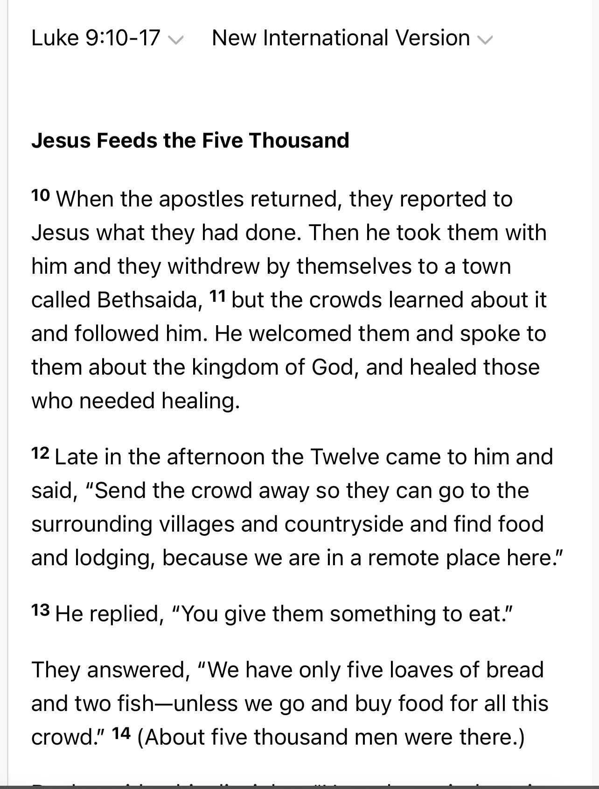
However according to Mark the feeding of the 5000 occurred in an unknown location and then the Biblical Jesus went to Bethsaida
👇
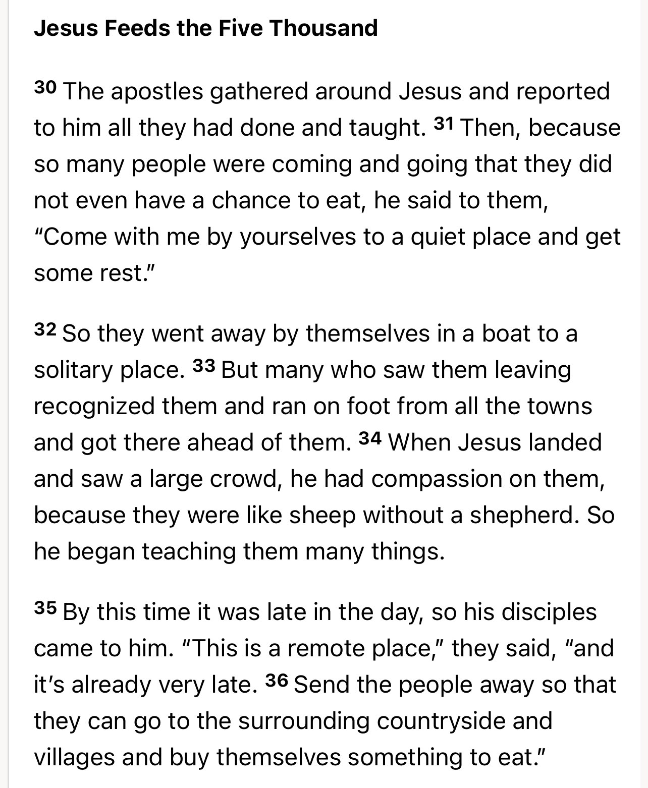
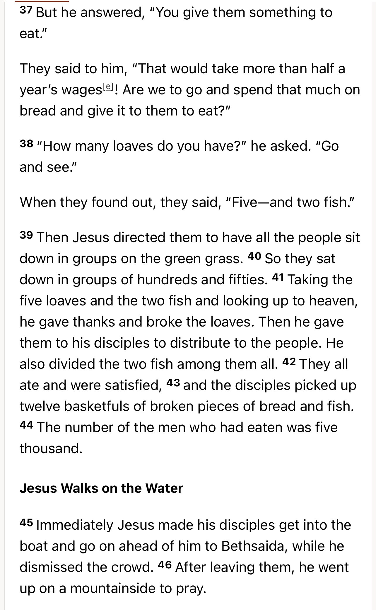
The Christian apologist and scholar Mike Licona admits that this an error as well.
Watch from this time stamp (1:18)
https://m.youtube.com/watch?v=crI2yph4e0w
Origen Believed There Were Contradictions in the Bible
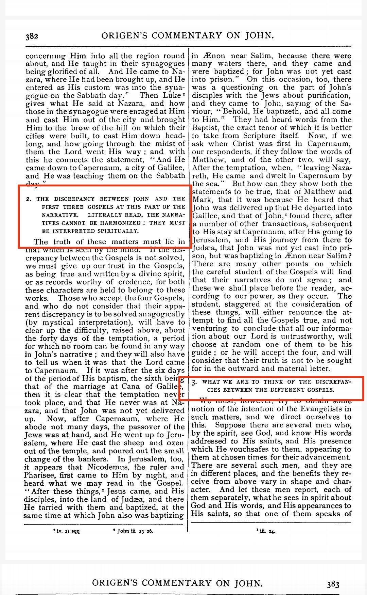
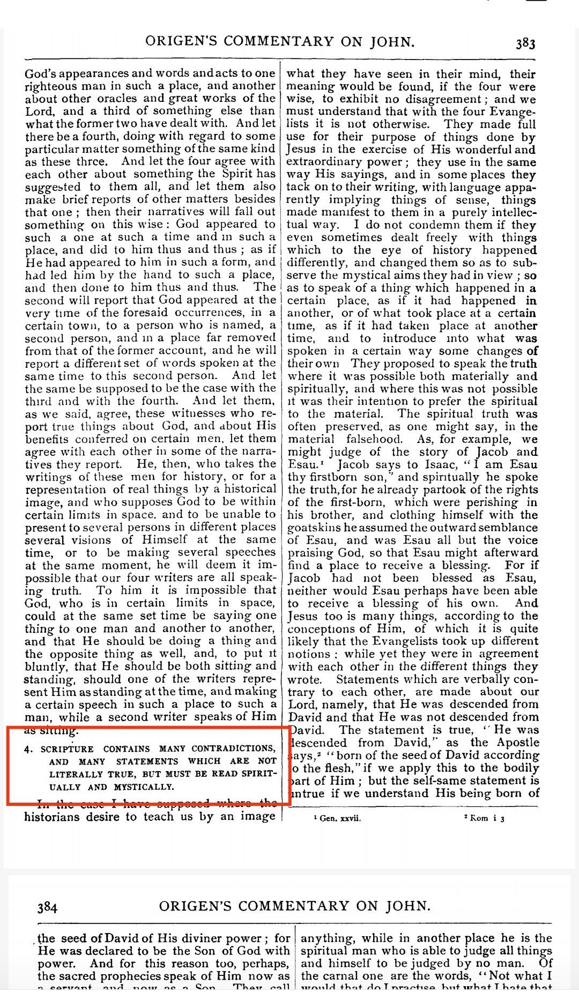
Contradiction in the Biblical Jesus’s Test with Satan.
Matthew and Luke contradict each other on the order of events of the Biblical Jesus’s test with Satan.
——
According to Matthew, Satan took the Biblical Jesus to the city of Jerusalem on the temple, and then he took him to a very high mountain.
👇
“Then the devil took him to the holy city and had him stand on the highest point of the temple. ‘If you are the Son of God,’ he said, “throw yourself down. For it is written: ‘He will command his angels concerning you, and they will lift you up in their hands, so that you will not strike your foot against a stone.’ Jesus answered him, ‘It is also written: ‘Do not put the Lord your God to the test.’ Again, the devil took him to a very high mountain and showed him all the kingdoms of the world and their splendor. ‘All this I will give you,’ he said, ‘if you will bow down and worship me.’”
(Matthew 4:5-9)
However in Luke’s version, Satan takes the Biblical Jesus to the high mountain and then to Jerusalem on the Temple.
👇
“The devil led him up to a high place and showed him in an instant all the kingdoms of the world. And he said to him, ‘I will give you all their authority and splendor; it has been given to me, and I can give it to anyone I want to. If you worship me, it will all be yours.’ Jesus answered, ‘It is written: Worship the Lord your God and serve him only.’ The devil led him to Jerusalem and had him stand on the highest point of the temple. ‘If you are the Son of God,’ he said, ‘throw yourself down from here. For it is written:
‘He will command his angels concerning you to guard you carefully; they will lift you up in their hands, so that you will not strike your foot against a stone.’ Jesus answered, ‘It is said: ‘Do not put the Lord your God to the test.’ When the devil had finished all this tempting, he left him until an opportune time.”
(Luke 4:5-13)
Note the contradiction in the chronological order of events. Question for Christians:
Did Satan take the Biblical Jesus to the temple then the mountain or was it the mountain first then the temple?
The Biblical Jesus’s Cursed Lineage
Credit to nojesus4jews.weebly.com for some quotations of the original article
👇
https://nojesus4jews.weebly.com/sophiees-blog/jeconiahs-curse
In Matthew 1, we are given a lineage of the Biblical Jesus. One of the people within this lineage is Jechoniah.
👇
“and Josiah the father of Jeconiah and his brothers at the time of the exile to Babylon. After the exile to Babylon: Jeconiah was the father of Shealtiel, Shealtiel the father of Zerubbabel,”
(Matthew 1:11-12)
Why is this significant you may ask? The reason being is that Jechoniah is cursed in the Old Testament and it’s said that none of his descendants can inherit David’s throne.
👇
“As surely as I live,” declares the Lord, “even if you, Jehoiachin son of Jehoiakim king of Judah, were a signet ring on my right hand, I would still pull you off. I will deliver you into the hands of those who want to kill you, those you fear—Nebuchadnezzar king of Babylon and the Babylonians. I will hurl you and the mother who gave you birth into another country, where neither of you was born, and there you both will die. You will never come back to the land you long to return to.” Is this man Jehoiachin a despised, broken pot, an object no one wants? Why will he and his children be hurled out, cast into a land they do not know? O land, land, land, hear the word of the Lord! This is what the Lord says: Record this man as if childless, a man who will not prosper in his lifetime, for none of his offspring will prosper, none will sit on the throne of David or rule anymore in Judah.”
(Jeremiah 22:24-30)
If this is the case that would mean that the Biblical Jesus cannot be the Messiah and inherit David’s throne.
——
Refuting Christian Responses
”The Biblical Jesus was not a biological descent! He was a born of a virgin so the curse doesn’t apply to him”
If that’s the case then why did Matthew even bother including a lineage of the Biblical Jesus to prove that he’s the Messiah? The lineage becomes completely irrelevant if this apologetic is used.
Furthermore if the Biblical Jesus is not a biological descendant then he cannot be the Messiah because according to the standards of the Old Testement he has to be descendant of the Biblical King David and the Biblical Solomon (see 2 Samuel 7:14, 1 Chronicles 17:11-14, 22:9-10, 28:4-6).
To try and claim that he was not descendant to get out of the Jechoniah’s curse is basically saying that the Biblical Jesus is both a descendant and not a descendant simultaneously. That’s obviously contradictory and absurd. You can’t have it both ways. Either he’s a descendant or not. Take your pick.
——
”The lineage of Mary found in Luke solves the problem”
No it doesn’t. According to the standards of the Old Testament, tribal affiliation is through the father not the mother (see Numbers 1:18 and Ezra 2:59).
But even for the sake of argument if tribal affiliation can go through the mother, this also doesn’t help the Biblical Jesus. The Biblical Mary was not from a legitimate Messianic family. Again according to the standards of the Old Testament, the Messiah must be a descendent of David through his son Solomon (see 2 Samuel 7:14, 1 Chronicles 17:11-14, 22:9-10, 28:4-6).
With this in mind according to Luke 3:30, the Biblical Mary’s genealogy goes to the Biblical David’s son Nathan not the Biblical Solomon.
Furthermore Luke 3:27 lists Shealtiel and Zerubbabel in his genealogy. These two also appear in Matthew 1:12 as descendants of the cursed Jeconiah. If the Biblical Mary descends from them, it would also disqualify her from being a Messianic progenitor.
——
”The ‘offspring’ of Jeconiah mentioned in the curse could be a limited reference to the king’s own children—his immediate offspring”
This is a plain misinterpretation and distortion of the text. The Hebrew makes it clear that this is referring to all of his descendants and not just his immediate children.
👇
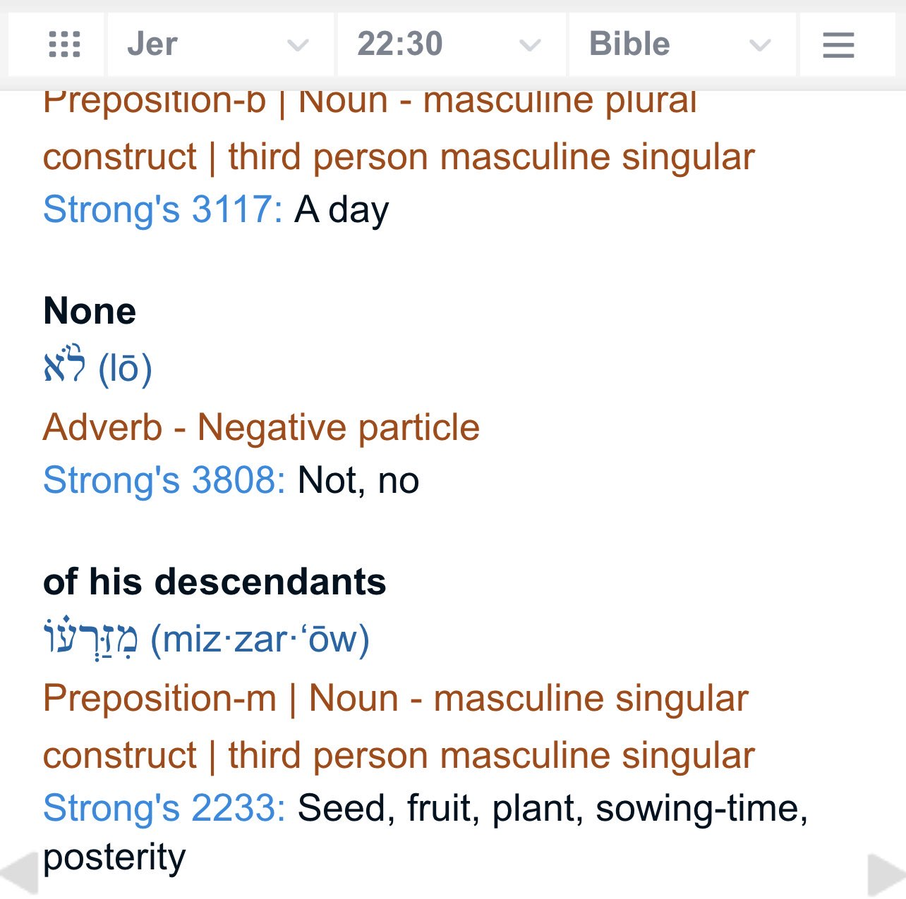
Also the very fact that none of Jechoniah’s later descendants inherited David’s throne is proof that the curse is not just for the immediate children.
If it were the case that the curse only applied to the immediate children and nobody else then how come none of the Israelites made Jechoniah’s grandsons or great grandsons or great great grandsons, etc inherit David’s throne?
——
”God forgave Jechoniah and the curse was lifted according to the Old Testement”
This is a complete lie. Nowhere in the Old Testament does it say that the curse was lifted.
Some apologists interpret Haggai 2:23 and say that this verse proves that the curse was lifted, however nowhere in the verse does it say that. It just says Zerubbabel was blessed by God by being appointed as a governor. If anything this actually proves against the apologists’ case. If the curse was lifted in this verse how come Zerubbabel didn’t inherit David’s throne? Why did God make him a governor instead of the king of the curse was lifted?
——
”Rabbinic sources say that Jechoniah’s curse was lifted”
This is also a lie. Let’s go through the rabbinic sources and see if they support the Christian apologists.
Some apologists appeal to Sanhedrin 37 and 38 and claim that Jechoniah’s sins were forgiven and thus the curse was lifted. However they are they are taking the Talmud out of context.
The Talmud (Sanhedrin 37 and 38) discuss whether or not the Babylonian Exile could atone as does repentance. For one thing, a person who might have been condemned to death prior to the exile was not killed. In the case of Jeconiah the Rabbis were divided on how much of one's sins are atoned through repentance in exile -- so there was no conclusion that Jeconiah's "curse" was lifted by his repentance in exile.
Christian apologists will also quote from Pesikta d'Rav Kahana and Vayikra (Leviticus) Rabbah. Both are aggadic midrash (homily, stories meant to make a moral point, not literal theology). So missionaries want to point to homily -- stories - as if it proves something...
The Encyclopedia Judaica explains it well:
“The aggadah comprehends a great variety of forms and content. It includes narrative, legends, doctrines, admonitions to ethical conduct and good behavior, words of encouragement and comfort, and expressions of hope for future redemption. Its forms and modes of expression are as rich and colorful as its content.”
"Parables and allegories, metaphors and terse maxims; lyrics, dirges, and prayers, biting satire and fierce polemic, idyllic tales and tense dramatic dialogues, hyperboles and plays on words, permutations of letters, calculations of their arithmetical values (gematria) or their employment as initials of other words (notarikon) – all are found in the aggadah. . .
"SYSTEMATIC PHILOSOPHIES OR THEOLOGICAL DOCTRINES ARE NOT TO BE FOUND IN THE AGGADAH." (end quote from Encyclopedia Judaica, emphasis mine).
Quoting aggadic midrash including Pesikta d'Rav Kahana and Vayikra (Leviticus) Rabbah to "prove" that the curse on Jeconiah was lifted is either ignorance or deceit.
In summary:
Nowhere in the Old Testament is there an account of the curse being lifted, and it would have been mentioned if it were, since this is such an important matter;
The discussion in the Talmud is a debate -- and there is no firm conclusion as to whether or not the curse was lifted.
Other rabbinic sources referenced by missionaries to "prove" that the curse was lifted are all from stories, not from "facts."